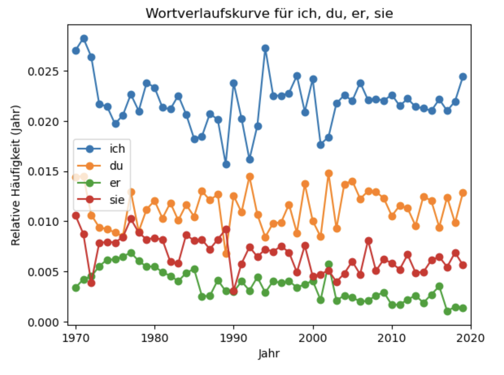

Datenanalyse Teil 1#
In diesem zweiteiligen Notebook lernen wir, wie wir in Python große Mengen strukturierter Daten, allen voran Daten in Form von Tabellen, verarbeiten und analysieren können.
Im Notebook „Input und Output Teil 2“ haben wir mit folgender Tabelle gearbeitet:

Wir haben unter Zuhilfenahme des csv-Moduls unseren eigenen Code geschrieben, um auszurechnen, wie viele der 100 flächengrößten Gemeinden sich in jedem der sechzehn Bundesländer befinden. In diesem Notebook lernen wir die sehr viel leistungsstärkere Bibliothek pandas kennen, die uns diese Rechnung im Handumdrehen liefern kann. Pandas kann aber viel mehr, wie wir gleich sehen werden.
Zu Beginn müssen wir pandas natürlich importieren. Folgendes Statement importiert die Bibliothek und verleiht ihr den Namen pd. Diese Abkürzung ist eine Konvention.
import pandas as pd
Solltest Du einen ModuleNotFoundError erhalten, musst Du pandas erst über die Command Line installieren. Öffne dazu das Terminal (macOS/Linux) bzw. die Eingabeaufforderung (Windows) in einem neuen Fenster, gib pip3 install pandas ein und drück auf Enter. Sobald der Prozess abgeschlossen ist, sollte der Import oben klappen.
Um pandas kennenzulernen, wollen wir mit einem großen Datensatz arbeiten, nämlich dem Songkorpus. Das Songkorpus beinhaltet Lieder von bekannten deutschen Künstler:innen, u. a. von Udo Lindenberg und Fettes Brot und umspannt die Jahre 1969-2022. Öffentlich herunterladbar sind unter anderem Worthäufigkeiten pro Jahr und zwar als Tabelle (auf der Webseite selbst finden sich weitere spannende Daten und Analysen). Jedes Wort, das in einem oder mehreren Songs in einem bestimmten Jahr vorkommt, steht in einer eigenen Zeile, zusammen mit dem entsprechenden Jahr und der Häufigkeit, mit der es in diesem Jahr bei allen Künstler:innen auftritt (s. u.). Insgesamt handelt es sich um über 380.000 Wörter. Solch eine tabellarische Datei, zumal derart groß, ist prädestiniert dazu, mit pandas verarbeitet zu werden.
Input#
In der folgenden Zelle öffnen wir die Datei, die sich bereits in „3_Dateien/Songkorpus“ befindet, und lesen sie mit der pandas-Funktion read_csv ein, die neben dem Dateipfad u. a. auch das Trennzeichen (sep, in diesem Fall der Tabulator „\t“) als Argument nimmt:
#Vor 'read_csv' steht wie gewohnt der Modulname, damit Python weiß, wo sich die Funktion befindet
songkorpus = pd.read_csv("../3_Dateien/Songkorpus/songkorpus_token.tsv", sep="\t")
Neben read_csv für Dateien mit Trennzeichen bietet pandas u. a. auch Funktionen für XML (read_xml), JSON (read_json) und Excel-Dateien (read_excel) an. Ebenfalls kann man je nach Daten weitere Parameter spezifizieren, u. a. na_filter, um zu definieren, wie mit fehlenden Werten (sog. NaN-Werten) umgegangen werden soll.
Bemerkung am Rande: Fehlende Werte führen immer wieder zu Problemen bei der Arbeit mit pandas. Deswegen solltest Du Dich beim Einlesen Deiner eigenen Daten stets fragen, ob bestimmte Werte darin fehlen könnten und wenn ja, wie Du damit umgehen möchtest. Pandas bietet neben na_filter nützliche Methoden wie isna, dropna und fillna für den Umgang mit fehlenden Werten (mehr Infos hier). Im Folgenden gehen wir aber nicht darauf ein, im Songkorpus fehlen schlicht keine Werte.
Die Lesemethode überführt unsere Daten in jedem Fall in ein sog. DataFrame:
print(type(songkorpus))
<class 'pandas.core.frame.DataFrame'>
DataFrames sind ein eigener Datentyp von pandas, auf den wir eine Vielzahl nützlicher Operationen anwenden können, etwa um einen Überblick über die Daten zu bekommen.
Überblick bekommen#
Hier bietet sich insbesondere die Methode head an, die standardmäßig die ersten fünf Zeilen (also den „Kopf“) des DataFrame ausgibt:
songkorpus.head() #'head' nimmt optional eine Ganzzahl als Argument, die definiert, wie viele der ersten Zeilen ausgegeben werden sollen
| CO_TOKEN | CO_YEAR | CO_COUNT | |
|---|---|---|---|
| 0 | Klaround | 2007 | 1 |
| 1 | #3 | 2009 | 1 |
| 2 | #Babo | 2015 | 1 |
| 3 | #JeSuisPasséChezSo | 2018 | 1 |
| 4 | #Nachbar | 2016 | 1 |
Eher komische Wörter in der Spalte „CO_TOKEN“. Wie wir an Spalte „CO_COUNT“ erkennen können, kamen sie aber auch nur jeweils einmal (im in „CO_YEAR“ angegebenen Jahr) vor.
Das Gegenstück zu head ist tail (also der „Schwanz“), wodurch wir die letzten fünf Zeilen des DataFrame erhalten:
songkorpus.tail() #Auch 'tail' nimmt optional eine Ganzzahl als Argument, die definiert, wie viele der letzten Zeilen ausgegeben werden sollen
| CO_TOKEN | CO_YEAR | CO_COUNT | |
|---|---|---|---|
| 386505 | Vierzehn | 2020 | 1 |
| 386506 | Was | 2020 | 1 |
| 386507 | Weißer | 2020 | 1 |
| 386508 | Wie | 2020 | 1 |
| 386509 | Wozu | 2020 | 1 |
Die Ausgabe sieht übrigens anders aus, wenn wir einen print-Befehl verwenden, anstatt dass Jupyter schlicht die letzte Zeile ausgibt (probier’s aus!). Mit dem print-Befehl verschwindet die angenehme Formatierung.
Mithilfe von shape, columns und index können wir außerdem in Erfahrung bringen, welches Format (shape), d. h. wie viele Spalten und Zeilen das DataFrame hat, sowie wie Spalten (columns) und Zeilen (index) benannt sind.
⚠️ Achtung: Es handelt sich dabei um sog. Attribute des DataFrame, die wir uns vereinfacht gesagt als Eigenschaften des DataFrame vorstellen können. Um auf ein Attribut eines Objekts zuzugreifen, hängt man den Namen des Attributs wie bei Methoden nach einem Punkt an das betreffende Objekt, schließt aber nicht mit Klammern ab:
print(songkorpus.shape, songkorpus.columns, songkorpus.index, sep="\n")
original_len = len(songkorpus)
(386510, 3)
Index(['CO_TOKEN', 'CO_YEAR', 'CO_COUNT'], dtype='object')
RangeIndex(start=0, stop=386510, step=1)
Unser DataFrame besteht also aus 386.510 Zeilen und drei Spalten. Die Anzahl an Zeilen, also die Länge des DataFrame, speichern wir in einer separaten Variablen ab, wir werden sie später noch brauchen.
Die Spaltennamen sind „CO_TOKEN“, „CO_YEAR“ und „CO_COUNT“ und die Zeilen sind mit Indizes von null (inklusive) bis 386510 (exklusive) durchnummeriert.
Die etwas kryptischen Spaltennamen können wir ändern, indem wir das Attribut columns unseres DataFrame ganz einfach mit einer Liste an neuen Spaltennamen überschreiben:
songkorpus.columns = ["Wort", "Jahr", "Häufigkeit"]
print(songkorpus.columns)
Index(['Wort', 'Jahr', 'Häufigkeit'], dtype='object')
Die Länge der Liste muss natürlich der Anzahl an Spalten entsprechen.
Um eine spezifische Spalte zu überschreiben, können wir die rename-Methode verwenden, derer wir ein dictionary mit Schlüssel-Werte-Paaren ({„jetziger Name“: „neuer Name“}) übergeben. Im Allgemeinen haben wir beim Bearbeiten eines DataFrame zwei Möglichkeiten, um die Bearbeitung wirksam zu machen:
Wir können immer das alte DataFrame mit der bearbeiteten Version überschreiben. So haben wir das auch in der Zelle oben gehandhabt.
Bei der Bearbeitung mithilfe einer Methode, hier
rename, können wir auch den Parameterinplace=Truespezifizieren, um die Bearbeitung „an Ort und Stelle“ vorzunehmen.
In der nächsten Zelle sehen wir beide Alternativen. Im Folgenden beschränken wir uns aber auf die erste Möglichkeit, da diese auch abseits von Methoden funktioniert.
songkorpus = songkorpus.rename(columns={"Wort": "Token"}) #1. Möglichkeit: Überschreiben
songkorpus.rename(columns={"Wort": "Token"}, inplace=True) #2. Möglichkeit: Bearbeiten "inplace"/"an Ort und Stelle"
songkorpus.head()
| Token | Jahr | Häufigkeit | |
|---|---|---|---|
| 0 | Klaround | 2007 | 1 |
| 1 | #3 | 2009 | 1 |
| 2 | #Babo | 2015 | 1 |
| 3 | #JeSuisPasséChezSo | 2018 | 1 |
| 4 | #Nachbar | 2016 | 1 |
Zuallererst wollen wir einen detailierten Blick auf Spalten und Zeilen werfen, aus denen ein DataFrame ja besteht.
Auf Spalten zugreifen#
Wenn wir an einer bestimmten Spalte eines DataFrame interessiert sind, können wir auf diese mit der gleichen Syntax wie bei dictionaries zugreifen:
songkorpus["Token"]
0 Klaround
1 #3
2 #Babo
3 #JeSuisPasséChezSo
4 #Nachbar
...
386505 Vierzehn
386506 Was
386507 Weißer
386508 Wie
386509 Wozu
Name: Token, Length: 386510, dtype: object
An dieser Stelle ist es natürlich wichtig, dass die Spalte aktuell wirklich „Token“ und nicht mehr „CO_TOKEN“ oder „Wort“ heißt. Dies würde, wie bei inexistenten Schlüsseln in einem dictionary auch, zu einem KeyError führen.
Weiter funktioniert für den Spaltenzugriff auch die sog. dot-Notation nach dem Schema DataFrame.column:
songkorpus.Token #Beachte, dass hierfür der Spaltenname nicht als string, also ohne Anführungszeichen, angehängt wird!
0 Klaround
1 #3
2 #Babo
3 #JeSuisPasséChezSo
4 #Nachbar
...
386505 Vierzehn
386506 Was
386507 Weißer
386508 Wie
386509 Wozu
Name: Token, Length: 386510, dtype: object
Die dot-Notation erfüllt (fast immer) die gleiche Funktion wie die Zugriffsweise über eckige Klammern, auf die wir uns fortan beschränken.
In jedem Fall entspricht das, was wir dabei zurückerhalten, dem zweiten wichtigen Datentyp von pandas neben DataFrame, nämlich einer sog. Series:
tokens = songkorpus["Token"]
print(type(tokens))
<class 'pandas.core.series.Series'>
Series kann man mit Listen vergleichen. Sie sind im Gegensatz zu DataFrames nicht zweidimensional (Spalten und Zeilen), sondern eindimensional. Viele Listen-Operationen wie z. B. Indexing und Slicing funktionieren bei Series gleichermaßen:
print(tokens[10000], "\n") #Indexing
print(tokens[9999:10002]) #Slicing
Atzenmusik
9999 Atzenlogo
10000 Atzenmusik
10001 Atzenparty
Name: Token, dtype: object
✏️ Übung 1: Erstell eine weitere Series, die nur das 100.000te, 200.000te und 300.000te Token der Series tokens beinhaltet.
#In diese Zelle kannst Du den Code zur Übung schreiben.
Anstatt eines Spaltennamens können wir auch eine Liste an Spaltennamen übergeben, um auf mehrere Spalten gleichzeitig zuzugreifen:
two_columns = songkorpus[["Token", "Jahr"]].head() #Beachte die inneren eckigen Klammern für die Liste!
two_columns
| Token | Jahr | |
|---|---|---|
| 0 | Klaround | 2007 |
| 1 | #3 | 2009 |
| 2 | #Babo | 2015 |
| 3 | #JeSuisPasséChezSo | 2018 |
| 4 | #Nachbar | 2016 |
Überleg Dir kurz, was für ein Datentyp two_columns hat.
Genau: Nun haben wir nicht mehr nur eine Spalte, in der Zeilenwert um Zeilenwert in einer Dimension gespeichert ist, sondern zwei Spalten. two_columns ist also immer noch ein zweidimensionales Objekt, sprich ein DataFrame:
print(type(two_columns))
<class 'pandas.core.frame.DataFrame'>
Nun wissen wir, wie wir auf Spalten zugreifen können.
Auf Zeilen zugreifen#
Um auf Zeilen zuzugreifen, hängen wir .loc[index] an das DataFrame an und übergeben den Index der gewünschten Zeile anstelle von index:
songkorpus.loc[777]
Token 16-Jährige
Jahr 2008
Häufigkeit 1
Name: 777, dtype: object
Verwend stets diese Syntax, um auf Zeilen zuzugreifen.
Anfänger:innen versuchen oft, die Syntax DataFrame[index] zu verwenden. Das führt aber zu einem KeyError, denn diese Syntax ist dem Spaltenzugriff vorbehalten (sollte der übergebene index zufälligerweise auch ein Spaltenname sein, erhalten wir keinen KeyError, aber die Ausgabe entspricht dann auch der jeweiligen Spalte, und nicht der gewünschten Zeile).
Da wir bloß auf eine einzige Zeile zugreifen, in der Spaltenwert um Spaltenwert in einer Dimension gespeichert ist, liegt wieder der Datentyp Series vor:
print(type(songkorpus.loc[777]))
<class 'pandas.core.series.Series'>
Zur Verdeutlichung: Sowohl eine Sequenz von Werten einer Spalte als auch eine Sequenz von Werten einer Zeile entsprechen bei pandas einer Series. Entscheidend ist bloß, dass nur eine einzige Dimension vorliegt. Sobald ein Objekt sowohl mehrere Spalten als auch mehrere Zeilen umfasst, handelt es sich um ein DataFrame.
Ein solches Objekt können wir auch über loc erhalten, indem wir auf mehrere Zeilen gleichzeitig zugreifen. Dies funktioniert wie bei dem Zugriff auf mehrere Spalten (s. o), indem wir mehrere Indizes als Liste übergeben.
print(type(songkorpus.loc[[777,888]])) #Beachte die inneren eckigen Klammern für die Liste!
songkorpus.loc[[777,888]]
<class 'pandas.core.frame.DataFrame'>
| Token | Jahr | Häufigkeit | |
|---|---|---|---|
| 777 | 16-Jährige | 2008 | 1 |
| 888 | 1980 | 1980 | 3 |
Zudem können wir auf mehrere aufeinanderfolgende Zeilen zugreifen, indem wir dieselbe Syntax wie bei Slicing verwenden:
songkorpus.loc[777:780] #Keine inneren eckigen Klammern!
| Token | Jahr | Häufigkeit | |
|---|---|---|---|
| 777 | 16-Jährige | 2008 | 1 |
| 778 | 16-Zoll | 2017 | 1 |
| 779 | 16. | 2004 | 11 |
| 780 | 16/1 | 2000 | 1 |
Im Gegensatz zu gewöhnlichem Slicing bei Listen wird der letzte Index bei pandas miteingerechnet („inklusiv“, vgl. Notebook „Datentypen“).
Abschließend sei erwähnt, dass Zeilen nicht zwingend mit numerischen Indizes durchnummeriert sein müssen. Zeilen können wie Spalten ebenfalls Namen haben. Dieses Szenario wollen wir in der nächsten Übung mit denselben Daten durchspielen.
✏️ Übung 2:
Lies die Datei
songkorpus_tokens.tsvabermals ein und übergib beim Erstellen des DataFrame zusätzlich den Parameterindex_col=0. Dadurch wird die erste Spalte (mit dem Index0), also diejenige mit den Tokens, zur sog. Index-Spalte. Jede Zeile hat nun statt eines numerischen Index einen Namen, nämlich das jeweilige Token. Weis das DataFrame der Variablensongkorpus_labelled_rowszu.Benenn die Spalten wie bei
songkorpusum. Falls Du hier eine Fehlermeldung kriegst, lies sie aufmerksam und pass Deinen Code entsprechend an.Überleg Dir, was die Tatsache, dass wir nun Tokens als Zeilennamen verwenden, zur Konsequenz hat. Experimentier dazu gerne mit dem DataFrame herum und greif auf verschiedene Zeilen über Namen zu.
#In diese Zelle kannst Du den Code zur Übung schreiben.
Im Gegensatz zu Spaltennamen (und Schlüsseln bei dictionaries) dürfen Zeilennamen mehrfach vorkommen. Der Zugriff auf eine oder mehrere Zeilen funktioniert ungeachtet dessen gleich wie bei DataFrames, die mit numerischen Indizes durchnummeriert sind, also mittels .loc[index].
✏️ Übung 3: Setz die Tatsache, dass Zeilennamen mehrfach vorkommen dürfen, produktiv ein und find heraus, wie oft „Dresden“ in songkorpus_labelled_rows vorkommt, indem Du die Häufigkeiten in allen Jahren, in denen das Wort gesungen wird, zusammenzählst.
💡 Tipp: Der erste Schritt besteht darin, aus dem gesamten DataFrame songkorpus_labelled_rows ein kleineres, sog. Sub-DataFrame zu erstellen, das mit einer neuen Variablen referenziert wird. Der zweite Schritt besteht darin, eine Series aus diesem Sub-DataFrame „herauszuschneiden“, die Du anschließend wie eine Liste behandeln kannst, um schließlich zur Anzahl der Nennungen von „Dresden“ zu gelangen.
#In diese Zelle kannst Du den Code zur Übung schreiben.
Auf Spalten und Zeilen zugreifen#
loc können wir ebenfalls verwenden, um gleichzeitig anzugeben, auf welche Spalte(n) und Zeile(n) wir bei einem DataFrame zugreifen möchten. Auf den Zeilenindex folgt nach einem Komma der gewünschte Spaltenname:
print(songkorpus.loc[10, "Jahr"])
"""Randbemerkung: Auf die Spitze getrieben können wir mit '.loc' auch nur auf Spalten zugreifen, nämlich indem wir,
wie bei Listen-Slicing auch möglich, durch Weglassen eines Start- und Endindex sämtliche Zeilen ansprechen, sprich so:
songkorpus.loc[:, "Jahr"]."""
1995
'Randbemerkung: Auf die Spitze getrieben können wir mit \'.loc\' auch nur auf Spalten zugreifen, nämlich indem wir, \nwie bei Listen-Slicing auch möglich, durch Weglassen eines Start- und Endindex sämtliche Zeilen ansprechen, sprich so: \nsongkorpus.loc[:, "Jahr"].'
Neben der Herangehensweise über loc besteht auch die Möglichkeit erst wie oben gelernt auf eine spezifische Spalte bzw. eine spezifische Zeile zuzugreifen, was in einer Series resultiert, und in dieser Series anschließend auf eine bestimmte Zeile bzw. eine bestimmte Spalte zuzugreifen (z. B. songkorpus["Token"][22]). Obige Syntax mit loc ist diesen sog. „chained assignments“ (etwa: Kettenaufgabe) jedoch vorzuziehen.
Wie immer können wir auch Listen übergeben, um auf mehrere Spalten und/oder mehrere Zeilen gleichzeitig zuzugreifen. Beim Zeilenzugriff funktioniert sowohl eine Liste einzelner Indizes…
songkorpus.loc[[9999,10000], ["Token", "Häufigkeit"]]
| Token | Häufigkeit | |
|---|---|---|
| 9999 | Atzenlogo | 2 |
| 10000 | Atzenmusik | 1 |
…als auch die slicingähnliche Syntax für eine Sequenz an Zeilen:
songkorpus.loc[9999:10005, ["Token", "Häufigkeit"]]
| Token | Häufigkeit | |
|---|---|---|
| 9999 | Atzenlogo | 2 |
| 10000 | Atzenmusik | 1 |
| 10001 | Atzenparty | 4 |
| 10002 | Atzenstyle | 2 |
| 10003 | Atzentanz | 1 |
| 10004 | Atzin | 12 |
| 10005 | Au | 2 |
Nun wissen wir, wie wir auf beliebige (Kombinationen von) Spalte(n) und Zeile(n) zugreifen können. Als Nächstes möchten wir unseren Daten erweitern, indem wir eine Spalte hinzufügen:
Spalten hinzufügen#
Eine einzelne Spalte entspricht ja einer Series und Series wiederum kommen Listen sehr nahe. Deshalb können wir zur Definition einer neuen Spalte ganz einfach eine Liste übergeben, deren Länge natürlich der Anzahl der Zeilen des DataFrame entsprechen muss.
Sagen wir, wir hätten gerne eine neue Spalte, in der das Jahrzehnt gespeichert wird, in der das jeweilige Token gesungen wurde. Die einzelnen Jahre haben wir schon, nun wollen wir aber jeweils zehn Jahre zu einem Jahrzehnt bündeln.
Dazu können wir in gewohnter Python-Manier über die Spalte „Jahr“ in songkorpus iterieren (auch bei der Iteration zieht die Analogie Series – Liste!), auf den jeweiligen Wert in der Spalte „Jahr“ zugreifen, ihn in einen string casten und das Jahr reduziert auf das Jahrzehnt einer neuen Liste anhängen:
decades = []
for year in songkorpus["Jahr"]:
"""Casten in einen string ist erforderlich, da sich Slicing nur auf sequentielle Objekte anwenden lässt
(Ganzzahlen gehören nicht dazu, vgl. Notebook "Datentypen") und nur strings miteinander konkateniert werden können."""
decade = str(year)[:-1] + "0"
decades.append(decade)
Anschließend müssen wir nur noch eine neue Spalte in songkorpus definieren und ihr die Liste decades zuweisen. Das Erstellen einer neuen Spalte erfolgt genau gleich wie das Definieren eines neuen Schlüssels bei einem dictionary:
songkorpus["Jahrzehnt"] = decades
songkorpus.head()
| Token | Jahr | Häufigkeit | Jahrzehnt | |
|---|---|---|---|---|
| 0 | Klaround | 2007 | 1 | 2000 |
| 1 | #3 | 2009 | 1 | 2000 |
| 2 | #Babo | 2015 | 1 | 2010 |
| 3 | #JeSuisPasséChezSo | 2018 | 1 | 2010 |
| 4 | #Nachbar | 2016 | 1 | 2010 |
Recht simpel.
✏️ Übung 4:
Füg songkorpus eine weitere Spalte mit dem Namen „Länge“ hinzu, in der die Anzahl an Buchstaben je Token steht.
#In diese Zelle kannst Du den Code zur Übung schreiben.
✏️ Übung 5: Vereinfache den Code von oben, mit dessen Hilfe wir die Spalte „Jahrzehnt“ hinzugefügt haben, indem Du ihn mittels List Comprehension (vgl. Notebook „Funktionen und Methoden Teil 1“) auf eine einzige Zeile reduzierst. Hol den Abschnitt zu List Comprehensions nach, falls Du ihn damals ausgelassen hast, da er als fortgeschritten markiert war.
Hinweis: songkorpus verfügt ja bereits über eine Spalte mit dem Namen „Jahrzehnt“. Indem Du das Resultat Deiner List Comprehension songkorpus["Jahrzehnt"] zuweist, überschreibst Du die befindliche Spalte ganz einfach.
#In diese Zelle kannst Du den Code zur Übung schreiben.
Sehr gut. Zusätzlich zum klassischen for-Loop und der List Comprehension lernen wir weiter unten eine dritte, pandas-eigene Methode kennen, mit der wir den modifizierten Inhalt einer Spalte in eine andere schreiben können.
Schauen wir uns nun an, wie wir Zeilen zu einem DataFrame hinzufügen können.
Zeilen hinzufügen#
Auch neue Zeilen können wir einem DataFrame als Liste hinzufügen. Die Länge der Liste muss wiederum der Anzahl an Spalten entsprechen.
Dies ist bei new_row in der nächsten Zelle nur der Fall, wenn Du in der Übung oben eine fünfte Spalte namens „Länge“ hinzugefügt hast. Um sicherzustellen, dass songkorpus im Weiteren alle notwendigen Spalten umfasst, fügt die erste Zeile die Spalte „Länge“ mittels List Comprension hinzu (bzw. überschreibt eine bereits vorhandene).
songkorpus["Länge"] = [len(str(token)) for token in songkorpus["Token"]]
new_row = ["Fantasiewort", 2023, 800, 2020, 12]
new_row können wir songkorpus nun unter Verwendung der bereits bekannten .loc[index]-Syntax hinzufügen. Als index geben wir schlicht den letzten numerischen Index + eins an, was der Länge von songkorpus entspricht (die numerischen Indizes fangen ja bei null an):
songkorpus.loc[len(songkorpus)] = new_row
songkorpus.tail()
| Token | Jahr | Häufigkeit | Jahrzehnt | Länge | |
|---|---|---|---|---|---|
| 386506 | Was | 2020 | 1 | 2020 | 4 |
| 386507 | Weißer | 2020 | 1 | 2020 | 7 |
| 386508 | Wie | 2020 | 1 | 2020 | 4 |
| 386509 | Wozu | 2020 | 1 | 2020 | 5 |
| 386510 | Fantasiewort | 2023 | 800 | 2020 | 12 |
Wenn Du diese Zelle mehrfach ausführst, wird new_row jedes einzelne Mal hinzugefügt. Schließlich entspricht len(songkorpus) jedes Mal dem letzten numerischen Index + eins.
Anstatt eine Zeile am Ende eines DataFrame hinzuzufügen, kannst Du die gleiche Syntax verwenden, um eine bestimmte, bereits existierende Zeile zu überschreiben. Das tun wir hier aber nicht, da wir mit den originalen Daten weiterarbeiten möchten. Entsprechend wollen wir die letzte(n) Zeile(n) mit Fantasiewörtern auch wieder entfernen.
Spalten und Zeilen entfernen#
Zu diesem Zweck gibt es die drop-Methode, die wir sowohl zum Entfernen von Spalten als auch Zeilen benutzen können. Als erstes Argument übergeben wir ihr den Namen der zu entfernenden Spalte bzw. den numerischen Index (oder Namen, s. o.) der zu entfernenden Zeile. Um mehrere Spalten oder Zeilen zu entfernen, können jeweils auch Listen übergeben werden. Anschließend spezifizieren wir mithilfe des axis-Parameters, ob es sich um eine Spalte oder eine Zeile handelt, die entfernt werden soll. axis=1 steht für Spalten und axis=0 für Zeilen (was der Standardwert ist und nicht zwingend angegeben werden muss). Die Syntax mit Standardwerten lautet also folgendermaßen:
DataFrame.drop(index_or_name, axis=0)
✏️ Übung 6: Führ die Zelle oben, in der wir songkorpus Zeilen mit Fantasiewörtern hinzugefügt haben, noch ein paar Mal aus, ohne darauf zu achten wie oft. Verwend nun drop in einer geeigneten Kontrollstruktur (vgl. Notebook „Kontrollstrukturen“) sowie die anfangs eingeführte Variable original_len, um die Fantasiewörter wieder zu entfernen und songkorpus, was die Anzahl an Zeilen betrifft, wieder in seinen Originalzustand zu bringen.
#In diese Zelle kannst Du den Code zur Übung schreiben.
Wunderbar!
Deskriptive Statistiken#
Einige der Spalten in songkorpus enthalten ja numerische Werte, konkret die Spalten „Jahr“, „Häufigkeit“ und „Länge“ (die Werte in „Jahrzehnt“ haben wir als string abgespeichert, s. o.). Numerischen Werten nähern wir uns am besten über deskriptive Statistiken, also etwa über Minimal- und Maximalwerte.
Pandas bietet dafür eine Reihe nützlicher Methoden: Angewandt auf eine Spalte gibt min den kleinsten Wert darin zurück, max den größten, mean das arithmetische Mittel, median den Median und sum die Summe aller Werte.
Bevor wir dies tun, stellen wir noch sicher, dass die oben hinzugefügten Zeilen auch wirklich nicht mehr vorhanden sind, schließlich soll das achthundertfach vorkommende „Fantasiewort“ unsere Statistiken nicht verzerren. Anstatt die drop-Methode von oben wählen wir hier einen anderen Weg, nämlich Slicing:
songkorpus = songkorpus[:original_len]
print(songkorpus["Häufigkeit"].min())
print(songkorpus["Häufigkeit"].max())
print(songkorpus["Häufigkeit"].mean())
print(songkorpus["Häufigkeit"].median())
print(songkorpus["Häufigkeit"].sum())
1
2007
5.7299293679335594
1.0
2214675
Wenig überraschend ist eins der kleinste Wert in der Spalte „Häufigkeit“. Wörter, die gar nicht vorkommen, befinden sich ja nicht im Datensatz.
Spannend ist jedoch, zu erfahren, dass das meistgesungene Token 2007 Mal in einen bestimmten Jahr vorkommt. Interessant ist auch, dass der Durchschnitt zwar bei fast sechs Nennungen liegt, mindestens die Hälfte aller Werte jedoch genau eins sind. Der Median ist ja der Wert, der genau in der Mitte aller „aufgereihten“ Werte steht: links von ihm können also nur weitere Einsen stehen, in der Mitte steht selbst auch eine Eins. Diese Logik funktioniert natürlich nur, weil wir wissen, dass alle Werte in dieser Spalte Ganzzahlen sind.
Einen kompakten Überblick über diese und ein paar weitere Statistiken liefert auch describe:
songkorpus["Häufigkeit"].describe() #Entgegen ihrer Bezeichnung liefert 'describe' auch die nicht-deskriptive, sondern inferentielle Standardabweichung (std).
count 386510.000000
mean 5.729929
std 31.514454
min 1.000000
25% 1.000000
50% 1.000000
75% 3.000000
max 2007.000000
Name: Häufigkeit, dtype: float64
Dabei lernen wir u. a., dass drei Viertel aller Tokens nur maximal drei Mal in einem bestimmten Jahr vorkommen.
describe lässt sich nicht nur auf eine Series, sondern auch auf ein DataFrame anwenden, wobei wir die Statistiken nur bei Spalten mit numerischen Werten zurückerhalten:
songkorpus.describe()
| Jahr | Häufigkeit | Länge | |
|---|---|---|---|
| count | 386510.000000 | 386510.000000 | 386510.000000 |
| mean | 1999.486401 | 5.729929 | 6.877465 |
| std | 15.150846 | 31.514454 | 2.933722 |
| min | 1969.000000 | 1.000000 | 1.000000 |
| 25% | 1986.000000 | 1.000000 | 5.000000 |
| 50% | 2002.000000 | 1.000000 | 6.000000 |
| 75% | 2013.000000 | 3.000000 | 8.000000 |
| max | 2022.000000 | 2007.000000 | 53.000000 |
Sehr nützlich ist auch die value_counts-Methode, die sämtliche Werte in einer Spalte auszählt und uns eine Art „Frequenzwörterbuch“ zurückgibt. Die Methode liefert also genau das, was wir im Notebook „Input und Output Teil 2“ manuell für die 100 flächengrößten Gemeinden Deutschlands errechnet haben:
songkorpus["Jahrzehnt"].value_counts()
2010 109062
2000 83075
1980 65571
1990 55021
1970 50949
2020 20995
1960 1837
Name: Jahrzehnt, dtype: int64
Die Zehnerjahre sind dieser Auswertung zufolge am häufigsten vertreten im songkorpus.
Da absolute Zahlen oft schwer miteinander zu vergleichen sind, bietet value_counts auch die Möglichkeit, die Werte zu normalisieren, d. h. relativ auszugeben. Dazu spezifizieren wir ganz einfach normalize=True:
songkorpus["Jahrzehnt"].value_counts(normalize=True)
2010 0.282171
2000 0.214936
1980 0.169649
1990 0.142353
1970 0.131818
2020 0.054319
1960 0.004753
Name: Jahrzehnt, dtype: float64
So lässt sich leicht ablesen, dass fast die Hälfte aller Tokens in songkorpus aus den Nuller- und Zehnerjahren stammen. Dieses Ungleichgewicht müssen wir bei künftigen Analysen im Hinterkopf behalten.
✏️ Übung 7: Mithilfe von describe haben wir oben herausgefunden, dass die durchschnittliche Wortlänge in songkorpus 6.88 Buchstaben beträgt. Die maximale Wortlänge beträgt hingegen sagenhafte 53 Buchstaben. Die Verteilung scheint alles andere als gleichmäßig zu sein, was wir auch an den sog. Quartilen 25% und 75% sehen (Quartile werden wie der Median berechnet, nur geht es nicht um den Mittelwert, sondern um die Werte nach einem Viertel bzw. drei Vierteln aller aufgereihten Werte). Find heraus, welche Wortlängen für jeweils mindestens 10 % aller Wörter gelten. Find ebenfalls heraus, welche Wortlängen für jeweils maximal 1 % aller Wörter gelten.
💡 Tipp: Einer von verschiedenen denkbaren Lösungswegen involviert die Tatsache, dass DataFrames und Series mit dictionaries verwandt sind und sich auch in ein solches casten lassen.
#In diese Zelle kannst Du den Code zur Übung schreiben.
Zwei weitere hilfreiche Methoden sind nlargest und nsmallest, die das DataFrame nach einer bestimmten Spalte (spezifiziert als zweites Argument) sortieren und die n (spezifiziert als erstes Argument) obersten bzw. untersten Zeilen ausgibt. Folgender Code liefert also die obersten zehn Zeilen eines nach der Spalte „Häufigkeit“ absteigend sortierten DataFrame:
songkorpus.nlargest(10, "Häufigkeit")
| Token | Jahr | Häufigkeit | Jahrzehnt | Länge | |
|---|---|---|---|---|---|
| 274820 | ich | 2019 | 2007 | 2010 | 3 |
| 274819 | ich | 2018 | 1788 | 2010 | 3 |
| 274817 | ich | 2016 | 1570 | 2010 | 3 |
| 350154 | und | 2018 | 1560 | 2010 | 3 |
| 274808 | ich | 2007 | 1513 | 2000 | 3 |
| 274821 | ich | 2020 | 1501 | 2020 | 3 |
| 225263 | die | 2018 | 1461 | 2010 | 3 |
| 274806 | ich | 2005 | 1455 | 2000 | 3 |
| 350141 | und | 2005 | 1451 | 2000 | 3 |
| 274807 | ich | 2006 | 1445 | 2000 | 3 |
Wasser auf die Mühlen der Selbstbezogenheitsthese! 😅
Natürlich können wir ein DataFrame auch als Ganzes sortieren, anstatt bloß die n obersten bzw. untersten Zeilen zurückzukriegen.
Werte sortieren#
Dazu benutzen wir die Methode sort_values, der wir als erstes Argument die Spalte übergeben, anhand derer wir sortieren wollen, und als zweites Argument die Richtung der Sortierung, wobei ascending=True für aufsteigend (Standardwert) und ascending=False für absteigend steht.
Folgender Code sortiert songkorpus aufsteigend nach der Spalte „Jahr“:
songkorpus = songkorpus.sort_values("Jahr", ascending=True)
songkorpus.head()
| Token | Jahr | Häufigkeit | Jahrzehnt | Länge | |
|---|---|---|---|---|---|
| 40887 | Ellenbogen | 1969 | 1 | 1960 | 10 |
| 203243 | atmen | 1969 | 1 | 1960 | 5 |
| 330263 | seines | 1969 | 1 | 1960 | 6 |
| 330256 | seinerseits | 1969 | 1 | 1960 | 11 |
| 81807 | Jetzt | 1969 | 4 | 1960 | 5 |
Nach der Verwendung von sort_values lohnt es sich i. d. R., den Index des DataFrame, der ja durch die Sortierung ganz durcheinander geraten ist, zurückzusetzen. Dies können wir mithilfe von reset_index tun. Zusätzlich spezifizieren wir, dass der alte Index gelöscht werden soll (drop=True), andernfalls wird er in einer neuen Spalte gespeichert):
songkorpus = songkorpus.reset_index(drop=True)
songkorpus.head()
| Token | Jahr | Häufigkeit | Jahrzehnt | Länge | |
|---|---|---|---|---|---|
| 0 | Ellenbogen | 1969 | 1 | 1960 | 10 |
| 1 | atmen | 1969 | 1 | 1960 | 5 |
| 2 | seines | 1969 | 1 | 1960 | 6 |
| 3 | seinerseits | 1969 | 1 | 1960 | 11 |
| 4 | Jetzt | 1969 | 4 | 1960 | 5 |
Würden wir den Index nicht zurücksetzen, bekämen wir beim Zeilenzugriff über loc u. U. nicht die Ergebnisse zurück, die wir erwarten. Etwa erhielten wir über songkorpus.loc[0] nicht die erste Zeile des neuen DataFrame zurück, sondern die erste Zeile des alten, unsortierten DataFrame. Das liegt daran, dass Zeilen ihre Indizes bei der Sortierung standardmäßig behalten. Dieses Verhalten wird verständlicher, wenn Du Dir vorstellst, Du würdest songkorpus_labelled_rows sortieren (vgl. Übung 2).
Wenn wir weder an der Häufigkeitsverteilung aller Werte in einer bestimmten Spalte (value_counts) noch an deren Reihenfolge (nlargest, nsmallest und sort_values) interessiert sind, sondern an der bloßen Existenz eines Wertes (egal wie oft er auftritt), gibt es eine weitere praktische Methode.
Einzigartige Werte#
Nämlich unique, das ähnlich wie die Python-Funktion set (vgl. Notebook „Datentypen“) alle einzigartigen Werte in einer bestimmten Spalte zurückgibt:
songkorpus["Jahr"].unique()
array([1969, 1970, 1971, 1972, 1973, 1974, 1975, 1976, 1977, 1978, 1979,
1980, 1981, 1982, 1983, 1984, 1985, 1986, 1987, 1988, 1989, 1990,
1991, 1992, 1993, 1994, 1995, 1996, 1997, 1998, 1999, 2000, 2001,
2002, 2003, 2004, 2005, 2006, 2007, 2008, 2009, 2010, 2011, 2012,
2013, 2014, 2015, 2016, 2017, 2018, 2019, 2020, 2021, 2022])
✏️ Übung 8: Wir wissen bereits, wie viele Tokens in unserem DataFrame vorkommen, nämlich 386.510. Find heraus, wie viele einzigartige Tokens, also Types (vgl. Notebook „Funktionen und Methoden Teil 2“) es gibt.
#In diese Zelle kannst Du den Code zur Übung schreiben.
Zuletzt ein Ausblick auf unseren Anwendungsfall, den wir im zweiten Teil des Notebooks „Datenanalyse“ bearbeiten werden:
🔧 Anwendungsfall: Wortverlaufskurven visualisieren 📈#
Wir wollen visualisieren, wie häufig beliebige Wörter in jedem Jahr im vom Songkorpus abgedeckten Zeitraum 1969-2022 vorkommen. Für die Begriffe „ich“, „du“, „er“ und „sie“ sieht das z. B. so aus:
Rekapitulier Dein Wissen aus diesem Notebook nun noch einmal und überleg bereits jetzt, wie Du den Anwendungsfall angehen könntest. Gute Arbeit bis hierhin!